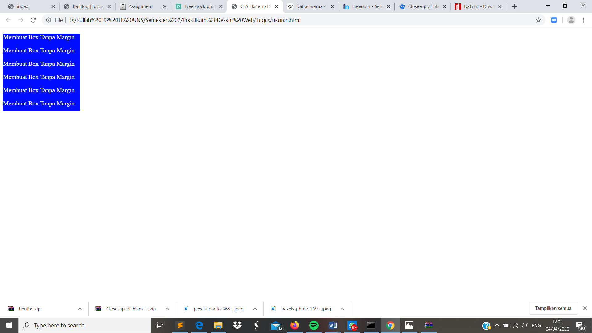

Width dan Height
Pendahuluan
Untuk membuat sebuah html tentu kita perlu menentukan ukuran yang akan ditampilkan nantinya. Untuk itu kita perlu membutuhkan properti berupa width dan height yang nantinya akan digunakan untuk menentukan ukuran panjang dan lebar dari halaman html yang kita miliki.
Codingan
<!DOCTYPE html>
<html lang="id">
<head>
<meta charset="utf-8">
<meta name="viewsport" content="width=device-width, initial-scale=1.0">
<title>CSS Eksternal Style</title>
<style type="text/css">
#box{
width: 200px;
height: 200px;
background-color: #000FFF;
color: #FFFFFF;
}
</style>
</head>
<body>
<div id="box">
<p>Membuat Box Tanpa Margin</p>
<p>Membuat Box Tanpa Margin</p>
<p>Membuat Box Tanpa Margin</p>
<p>Membuat Box Tanpa Margin</p>
<p>Membuat Box Tanpa Margin</p>
<p>Membuat Box Tanpa Margin</p>
</div>
</body>
</html>
Kode CSS Internal
<style type="text/css">
#box{
width: 200px;
height: 200px;
background-color: #000FFF;
color: #FFFFFF;
}
</style>
Hasil Screenshot

Analisis
Pada percobaan membuat width dan height dapat kita ketahui output yang dihasilkan yaitu berupa kotak yang berada pada pojok kiri halaman. Untuk membuat kotak tersebut kita dapat menggunakan format css berupa ukuran weight 200px dan height 200px, dengan tambahan background color berwarna biru.